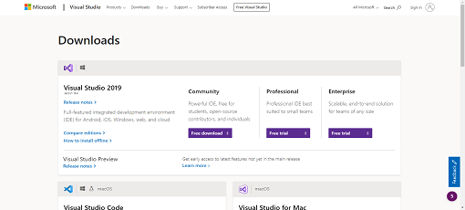
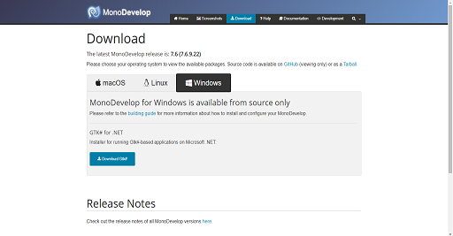

If you feel you can fix the code yourself, you can download the source code and change
whatever you like!
Step 1


Step 2
Download the TypeWriter source code (
click here).
Step 3
Open "Helios TypeWriter 2.0.sln" in Visual Studio / MonoDevelop.